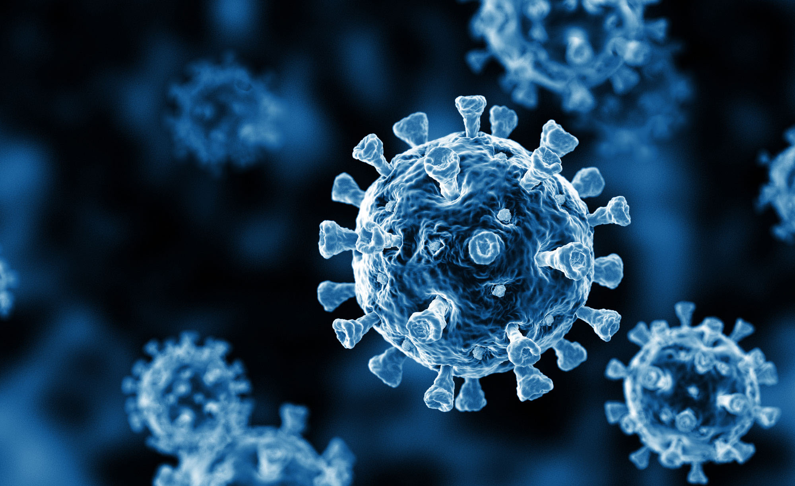

Virus
A virus is a small germ or pathogen that can infect you and cause diseases which make people sick. They can infect humans, plants, animals, bacteria, and fungi. Each one infects only specific types of hosts.
Viral infections in humans can cause no symptoms or make you extremely ill. Types of diseases they can cause include:
- Sexually Transmitted Diseases (STDs).
- Respiratory diseases.
- Diarrhea and vomiting.
- Skin conditions.
A virus is a small piece of genetic information in a carrying case: a protective coating called a capsid. Viruses aren't made up of cells, so they don't have all the equipment that cells do to make more copies of themselves. Instead, they carry instructions with them and use a host cell’s equipment to make more copies of the virus.
It’s like someone breaking into your house to use your kitchen. The virus brought its own recipe, but it needs to use your dishes, measuring cups, mixer, and oven to make it. (Unfortunately, they usually leave a big mess when you finally kick them out.)
Viruses are also sometimes called virions.
Virus features
Viruses share some common features:
- Made up of genetic material (RNA or DNA) and a protective protein coating (capsid).
- Sometimes have another layer called an envelope around the capsid. Viruses without an envelope are called naked viruses.
- Similar to parasites: they need a host to reproduce. They’ll survive outside of a host until their capsid breaks down over time.
- 100 to 1,000 times smaller than the cells in your body.
Types of viruses
Viruses can be classified based on similar features, like size, shape, and the type of genetic material they carry. They can be grouped into categories like family and genus. Some common types of viruses include:
- Influenza viruses
- Human herpesviruses
- Coronavirus
- Human papillomaviruses
- Enteroviruses
- Flaviviruses
- Orthopoxviruses
- Hepatitis viruses
Influenza viruses (Orthomyxoviridae)
The Orthomyxoviridae family of viruses includes influenza A and B, which cause the flu. Strains of influenza A also cause avian flu (“bird flu”) and swine flu (H1N1).
Human herpesvirus (Herpesviridae)
Herpesviridae is a large family of viruses. They cause several types of illnesses, like oral and genital herpes, chickenpox, shingles, Epstein-Barr, and cytomegalovirus (CMV).
Coronaviruses
Coronaviruses are a subfamily of viruses. SARS-CoV-2, the virus that causes COVID-19, is probably the most well-known coronavirus. But other types of coronaviruses cause mild illnesses, like a cold.
Human papillomavirus (HPV)
Human papillomaviruses are part of the Papillomaviridae family of viruses. They cause warts. Some types of HPV can lead to cancers.

Enterovirus
Enterovirus is a genus (one level smaller than the group called a “family”) of viruses that infect your intestinal tract. Types of enteroviruses cause polio and hand, foot, and mouth disease.
Orthopoxviruses
Viruses in the genus Orthopoxvirus cause blistering rashes. Mpox and smallpox are orthopoxviruses.
Hepatitis viruses
Though they don’t all belong to the same family or genus, hepatitis viruses all infect your liver. Hepatitis A, B, and C are the most common.
Retroviruses
Retroviruses are RNA viruses that use special proteins to make DNA. The virus then inserts its DNA into yours. Your cells read the viral DNA as if it were its own instructions. HIV and human T-lymphotropic virus 1 (HTLV-1) are retroviruses.
Oncoviruses
Oncoviruses are viruses that can cause cancer. Viruses that have been linked to specific cancers include:
- HPV
- Epstein-Barr
- HIV
- Hepatitis B and C
- HTLV-1
- Human herpesvirus 8 (HHV-8)
Satellite viruses
Satellite viruses can’t reproduce without other, “helper” viruses. Most satellite viruses are found in plants.
Bacteriophages
Also just called “phages,” bacteriophages are viruses that specifically infect bacteria. Scientists are studying bacteriophage therapy as a potential way to treat bacterial infections that don’t respond to antibiotics.
How do viruses infect your body?
Viruses usually enter your body through your mucous membranes. These include your eyes, nose, mouth, penis, vagina, and anus. Some viruses get in through a break in your skin or from a bite from a mosquito or tick. They then infect cells and reproduce. Viruses have several steps to infecting cells and reproducing. They include:
- Attachment
- Entry
- Replication
- Assembly
- Release
Attachment and entry
There are three ways viruses can get into cells, which are:
- Receptor binding: Cells have receptors on the outside that can receive signals from proteins in your body. Think of them like doors. Some viruses trick cells into thinking they should be allowed inside, so the cells let them in the door.
- Direct fusion: Some viruses attach directly to host cells to get inside.
- Bacteriophages inject their genetic material into bacterial cells. The entire virus doesn’t need to get inside.
Replication, assembly, and release
Once the virus or its genetic material is inside of a cell, it uses either a lytic cycle or lysogenic cycle to reproduce (some use both):
- Lytic cycle: The virus uses the host cell’s machinery to make more copies of itself. Pieces of the virus assemble, wrapping up the genetic material in the capsid. Viruses make many copies of themselves this way. Eventually, there are so many copies of the virus inside the cell that it bursts. Those virions can now go and infect more cells.
- Lysogenic cycle: Some viruses have a dormant, or silent phase. They get inside cells and then wait. Instead of setting up shop to cook in your kitchen right away, it’s as if they put their recipe into your body’s recipe book without you knowing it. The cells don’t realize the virus is there and continue to reproduce as they normally would. Each new copy of the cell also has a copy of the virus in it. Certain triggers can cause those cells to burst, spreading viral particles into your body that can infect other cells. Triggers could include stress, chemical signals, or temperature changes.
Anatomy
What are the characteristics of viruses?
You can describe viruses based on a number of features, including:
- What they look like (their shape and size).
- Genome properties.
- Structural proteins and whether or not they have an envelope.
Virus shapes
Viruses can look very different from each other. Scientists often describe them by shape. Types of virus shapes include:
- Icosahedral or polyhedral: This is a geometric shape with many sides, similar to a soccer ball. Most viruses that infect people are icosahedral. A regular icosahedron is the optimum way of forming a closed shell from identical subunits. The minimum number of capsomeres required for each triangular face is 3, which gives 60 for the icosahedron. Many viruses, such as rotavirus, have more than 60 capsomers and appear spherical but they retain this symmetry.
- Helical: This virus shape looks like a cylinder. Its genetic information is coiled up like a spring inside. The genetic material (typically single-stranded RNA, but single-stranded DNA in some cases) is bound into the protein helix by interactions between the negatively charged nucleic acid and positive charges on the protein.
- Spherical: Spherical viruses are helical or polyhedral viruses that have an envelope around them. They’re shaped mostly like a ball.
- Complex: Complex viruses combine more than one shape. Viruses that infect bacteria have a polyhedral “head” connected to a helix “body.” Some bacteriophages, such as Enterobacteria phage T4, have a complex structure consisting of an icosahedral head bound to a helical tail, which may have a hexagonal base plate with protruding protein tail fibres. This tail structure acts like a molecular syringe, attaching to the bacterial host and then injecting the viral genome into the cell.
- Giant viruses: Mimivirus is one of the largest characterized viruses, with a capsid diameter of 400 nm. Protein filaments measuring 100 nm project from the surface. The capsid appears hexagonal under an electron microscope, therefore the capsid is probably icosahedral. In 2011, researchers discovered the largest then-known virus in samples of water collected from the ocean floor off the coast of Las Cruces, Chile. Provisionally named Megavirus chilensis, it can be seen with a basic optical microscope. In 2013, the Pandoravirus genus was discovered in Chile and Australia, and has genomes about twice as large as Megavirus and Mimivirus. All giant viruses have dsDNA genomes and they are classified into several families: Mimiviridae, Pithoviridae, Pandoraviridae, Phycodnaviridae, and the Mollivirus genus.